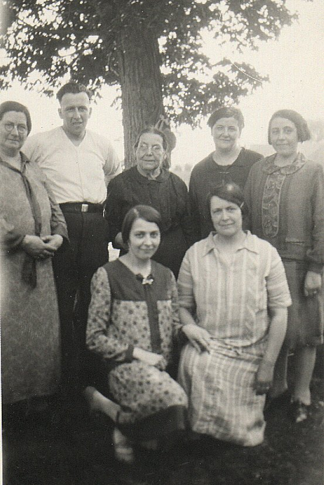

Photo prise vers 1928
On y retrouve Rosianne Miron, veuve d'Alphonse Charette sr, entourée de ses cinq filles et d'un de ses gendres.
En haut, de gauche à droite, Rose Anne Charette, Aldéric Lavoie (époux de Rose Anna), Rosianne Miron, Alexina Charette, Lumina Charette
En bas, de gauche à droite, Irène Charette et Mary Charette.
